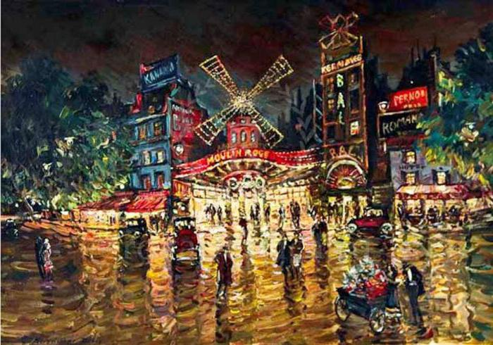

Следующую пору жизни хотелось бы передать словами автора: «Далее следует пора моей жизни, которая на первый взгляд кажется более подвижной и пестрой, чем предыдущая, и вполне могла бы послужить канвой для модного романа. Я должен был бы сейчас рассказать, как стал редактором одной германской газеты; как позволял своему перу и своему злому языку чересчур много свободы и постоянно подвергался за это придиркам и поучениям; как затем снискал себе славу пропойцы и в конце концов, после жестоких распрей, расстался с должностью и отправлен был в качестве корреспондента в Париж; как беспутствовал в этом проклятом вертепе, дерзко излишествовал во всем и ни о чем не заботился в хмельном угаре своей цыганской жизни.
Однажды вечером я сидел один в Воз и размышлял, оставить ли только Париж или лучше заодно и опостылевшую жизнь. Впервые за много месяцев пройдя в мыслях весь свой жизненный путь, я убедился, что потерял бы не так уж и много.»